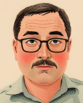

Content Creation & Consultancy
Content Creation & Education
Construct Knowledge and Gain Competency. I build high-quality, specialized online courses designed for learners to expertly innovate in embedded systems, Internet of Things (IoT), web development, mobile app development, perceptive AI, data analytics and cloud computing.
Feasibility & Risk Consultation
De-Risk Innovation and Secure Early Traction. I provide feasibility study and proof of concept (PoC) consultation in my core areas, with the aim of managing risk inherent in innovative ideas, and providing the demo to ascertain customer traction before committing to high-stake building.
About Bee Ko
I am an independent agent for elegancy, wellness and common sense. My professional foundation was built over years in academia, where I gained experience teaching core engineering disciplines and managing project works. That background now translates into a significant, unfair competitive advantage in the pedagogical approach to learning and an attention mechanism to do things right.
Innovative Technologist
As an Innovative Technologist, I don't just follow trends; I distill complex, cutting-edge concepts into structured, outcome-based online courses.
Risk Strategist
As a Risk Strategist, I proactively eliminate project blind spots and chart the roadmap for the most appropriate path forward.
Get in Touch
Ready to discuss a Proof of Concept or an online course partnership? Contact Bee's Trust & Link today at kohbhd@beetlskills.com.